Scenes
Side by side with the Format Reference
A photograph made with the reference format beside a scene of the same kind developed by the app. The subjects differ; judge color, contrast, grain and the format's imperfections.
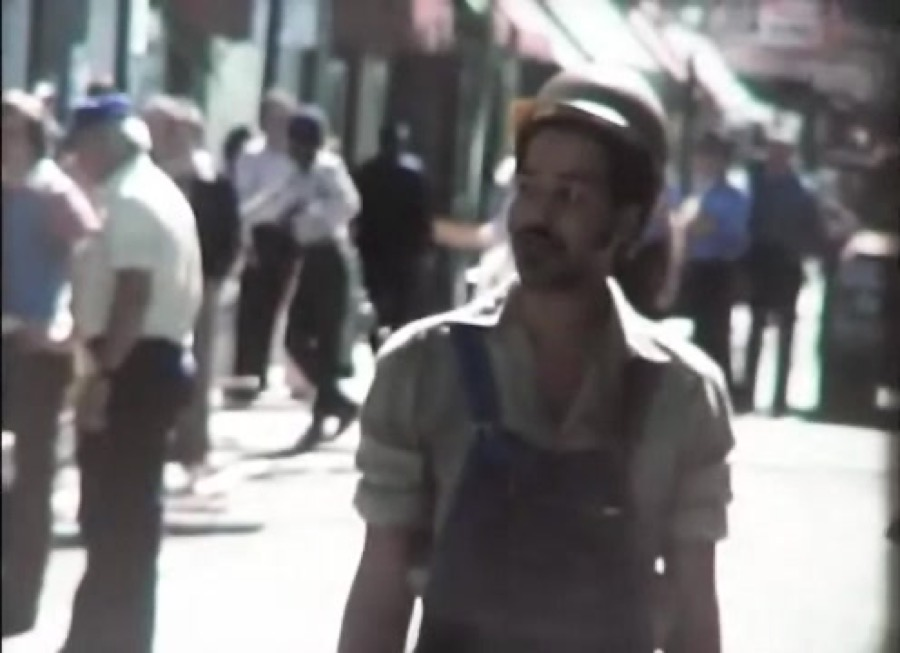
Jürgen Ternus · CC BY 3.0 · source
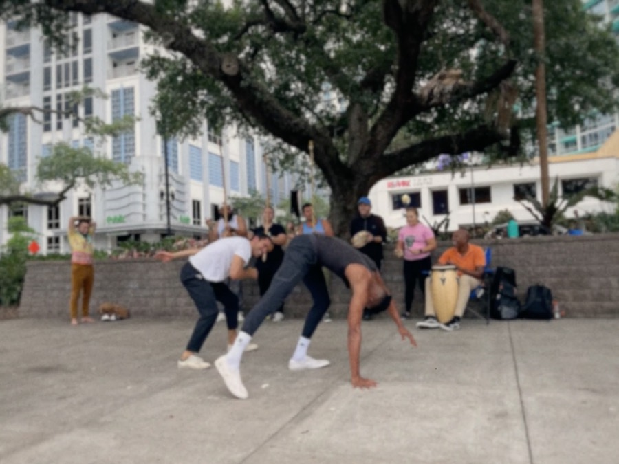
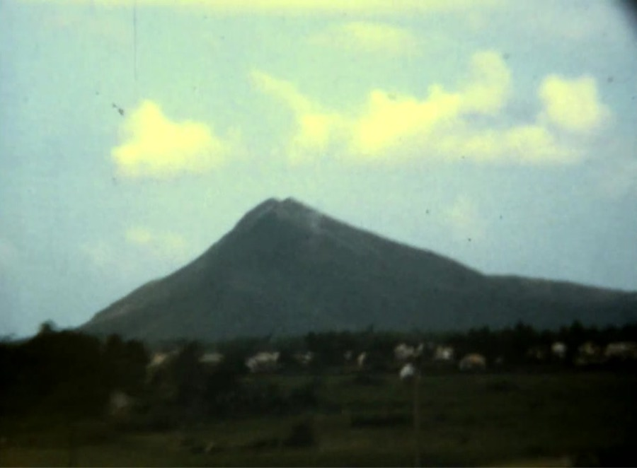
DFP32301 · CC BY-SA 4.0 · source
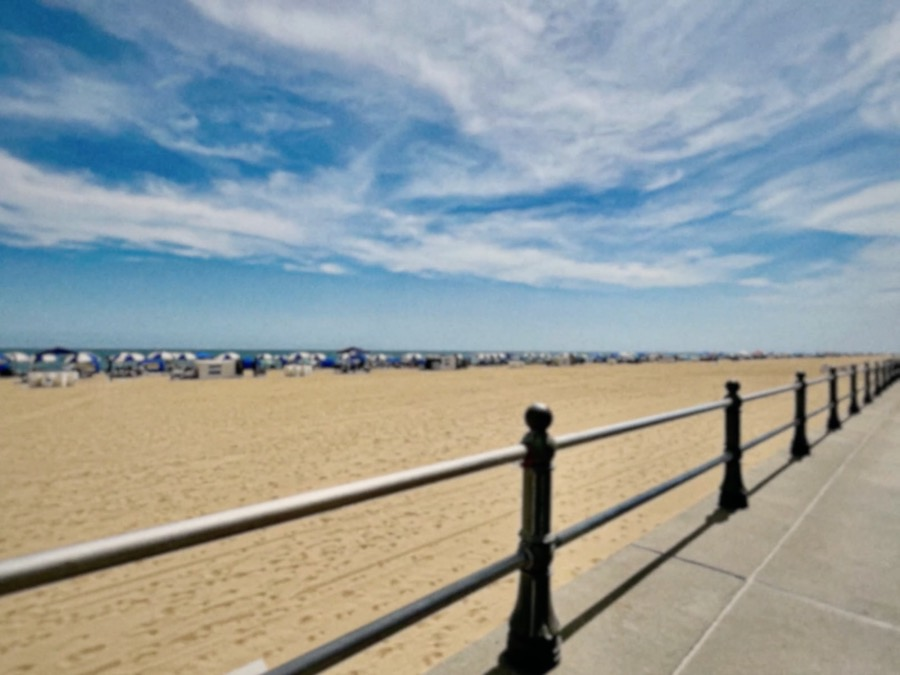
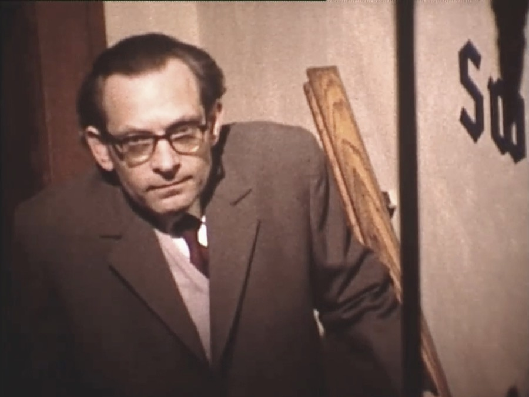
Jean-Paul De Preter. · CC BY-SA 4.0 · source
Every scene
DaySunny beach boardwalk (iPhone 13)

DayPeople playing capoeira in a city park (iPhone 13)

DayPasture gate in Scotland (iPhone 13)

Skin tonesNatural-light portrait: older woman, light skin

Skin tonesNatural-light portrait: two women, medium-brown skin

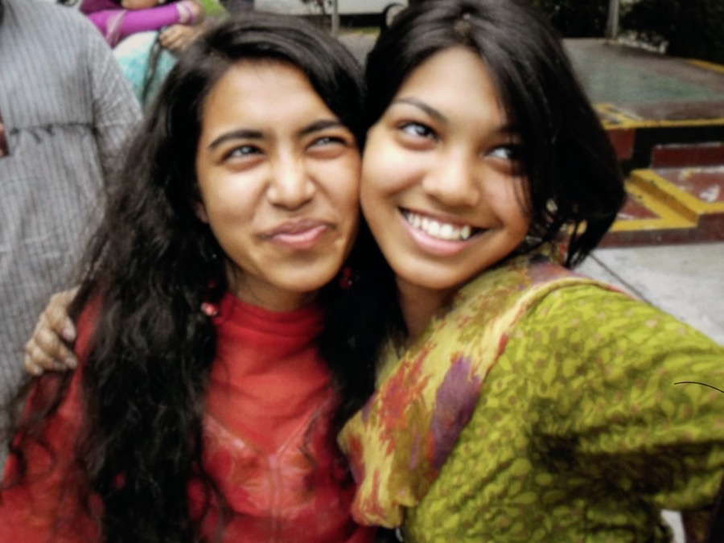
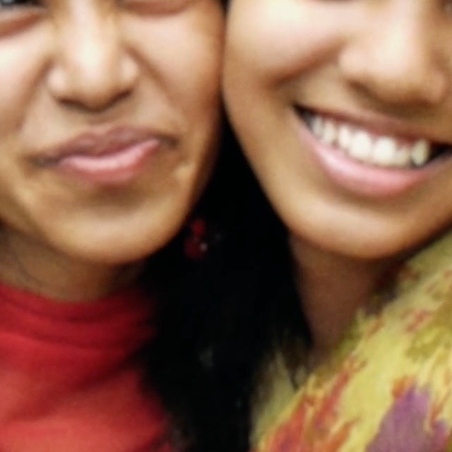
Skin tonesNatural-light portrait: two boys, dark skin (beach daylight)

FlashGroup toast lit by on-camera flash (compact camera, 2008)
FlashNight portrait with direct flash outdoors (compact camera, 2006)

Night or dim, no flashDim night street with street lamps, no flash (Google Pixel 7)
Bright highlightsBacklit interior with bright windows (iPhone 13 Pro)

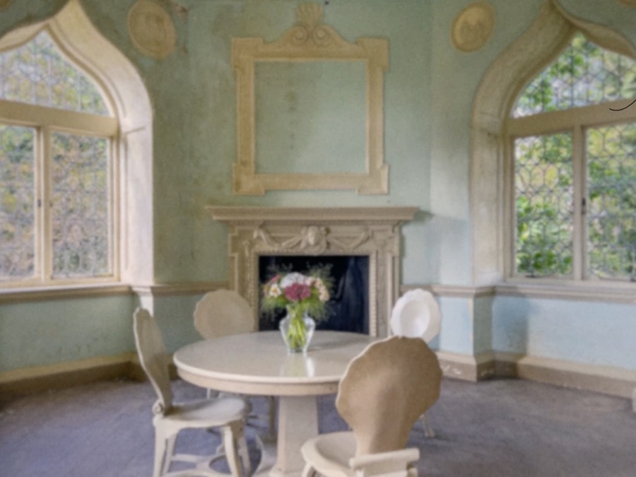
Bright highlightsSun in frame over the sea with glints (iPhone 14 Pro)

Bright highlightsNight street with bright signage, Akihabara (iPhone 15 Pro)


_May_2023_(1).JPG){kind=link}


.jpg){kind=link}
.jpeg){kind=link}
.jpg){kind=link}
.jpg){kind=link}
.jpg){kind=link}

.jpg){kind=link}
.jpg){kind=link}
Moving sceneVideo: costumed dancers with drums in daylight (iPhone 13)
Moving sceneVideo: pipes and drums band marching in sunshine (iPhone 13)
Moving sceneVideo: fairground ride at night with bright point lights
All Format Reference imagery
Photographs and film frames made with the Format Reference or the closest openly licensed equivalent, as credited. Judge the character, not the subject.
Super 8 home movies
Jean-Paul De Preter. · CC BY-SA 4.0 · source
Single frame grab of a man in a suit (writer René Lambrechts) from a Super 8 film shot on 26 April 1972, indoors. Shows Kodachrome II rendering of skin, a dark suit and a pale wall as transferred. Looks aged or transfer-shifted: a warm red-brown cast with lowered saturation and soft detail, so judge contrast and grain more than hue. The description explicitly states Super 8 mm film, Kodachrome II. Camera model not stated. Depicts an identifiable person. Commons file: "Rene lambrechts-1476822848.jpg".
DFP32301 · CC BY-SA 4.0 · source
Ten-second excerpt (helicopters and airmen on the flight line in daylight) from an amateur Super 8 reel shot in 1966-67. Shows Super 8 grain, gate shape with rounded corners, softness, exposure breathing and Kodachrome-era colour as transferred. The transfer looks like a projection capture: soft, highlights clip to yellow-white in later scenes, slight warm/yellow cast. Pillarbox removed (cropped to the 4:3 picture). Film stock not stated. Super 8 launched in 1965 with Kodachrome II as Kodak's colour cartridge stock, so Kodachrome II is likely but inferred. Camera not stated (not confirmed as a Kodak Instamatic M-series). Re-encoded to H.264 CRF 16 at native 29.97 fps, no audio. Source time range: 00:03:58-00:04:08. Source video: "Super8 Footage of Phu Cat Air Base, Vietnam, 66-67 (Amateur Film).webm" (1280x720, 381.7 s).
DFP32301 · CC BY-SA 4.0 · source
This frame: mountain peak beyond the base under a pale sky. Stills from the Phu Cat Air Base Super 8 reel: landscape with mountain, base overview, jet on runway, valley landscape, helicopter with soldiers and a close airman portrait. Moderately aged/transfer-limited: soft, warm-yellow cast and clipped highlights in some shots; blues and greens survive. Extracted with ffmpeg from the Commons original (1280x720 VP8) and cropped to the 978x720 picture area. Extracted with ffmpeg from the source video at 00:00:02. Source video: "Super8 Footage of Phu Cat Air Base, Vietnam, 66-67 (Amateur Film).webm" (1280x720, 381.7 s).
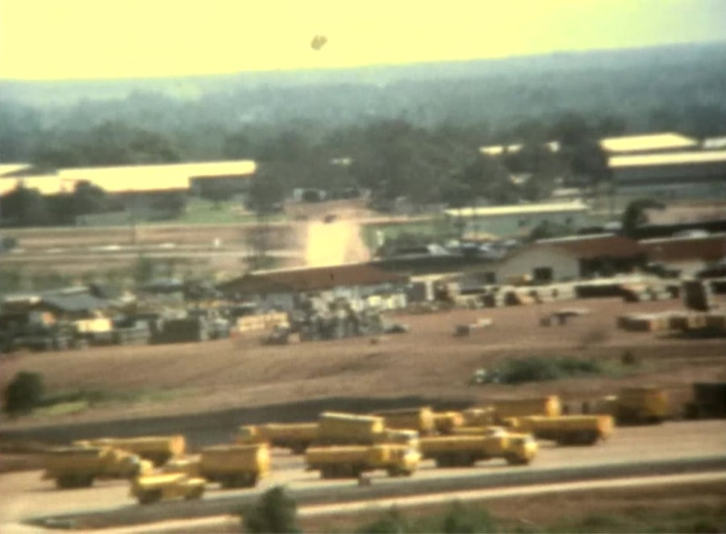
DFP32301 · CC BY-SA 4.0 · source
This frame: base overview with rows of yellow vehicles and hangars. Stills from the Phu Cat Air Base Super 8 reel: landscape with mountain, base overview, jet on runway, valley landscape, helicopter with soldiers and a close airman portrait. Moderately aged/transfer-limited: soft, warm-yellow cast and clipped highlights in some shots; blues and greens survive. Extracted with ffmpeg from the Commons original (1280x720 VP8) and cropped to the 978x720 picture area. Extracted with ffmpeg from the source video at 00:01:30. Source video: "Super8 Footage of Phu Cat Air Base, Vietnam, 66-67 (Amateur Film).webm" (1280x720, 381.7 s).
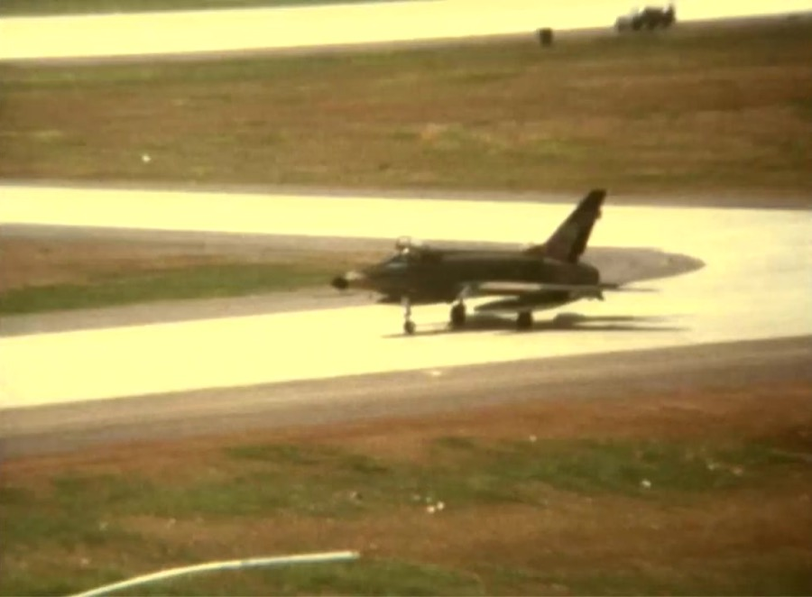
DFP32301 · CC BY-SA 4.0 · source
This frame: jet fighter on the runway. Stills from the Phu Cat Air Base Super 8 reel: landscape with mountain, base overview, jet on runway, valley landscape, helicopter with soldiers and a close airman portrait. Moderately aged/transfer-limited: soft, warm-yellow cast and clipped highlights in some shots; blues and greens survive. Extracted with ffmpeg from the Commons original (1280x720 VP8) and cropped to the 978x720 picture area. Extracted with ffmpeg from the source video at 00:01:40. Source video: "Super8 Footage of Phu Cat Air Base, Vietnam, 66-67 (Amateur Film).webm" (1280x720, 381.7 s).
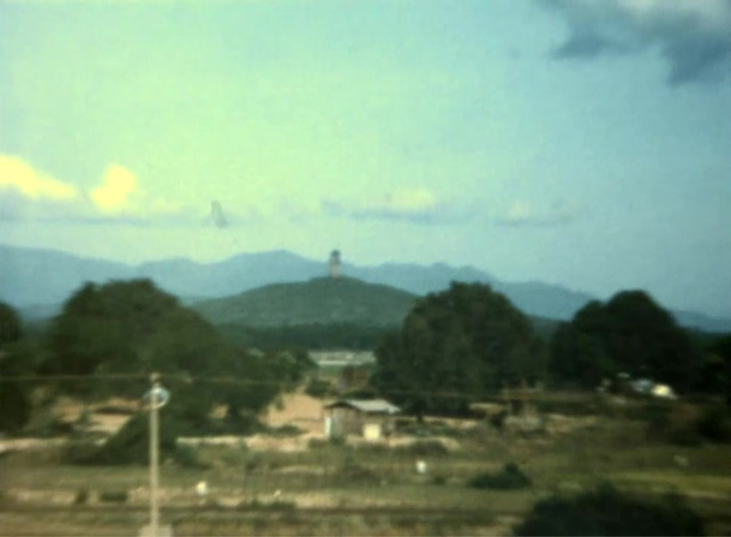
DFP32301 · CC BY-SA 4.0 · source
This frame: valley landscape with trees and mountains under a blue sky. Stills from the Phu Cat Air Base Super 8 reel: landscape with mountain, base overview, jet on runway, valley landscape, helicopter with soldiers and a close airman portrait. Moderately aged/transfer-limited: soft, warm-yellow cast and clipped highlights in some shots; blues and greens survive. Extracted with ffmpeg from the Commons original (1280x720 VP8) and cropped to the 978x720 picture area. Extracted with ffmpeg from the source video at 00:03:20. Source video: "Super8 Footage of Phu Cat Air Base, Vietnam, 66-67 (Amateur Film).webm" (1280x720, 381.7 s).
DFP32301 · CC BY-SA 4.0 · source
This frame: helicopter on the flight line with soldiers. Stills from the Phu Cat Air Base Super 8 reel: landscape with mountain, base overview, jet on runway, valley landscape, helicopter with soldiers and a close airman portrait. Moderately aged/transfer-limited: soft, warm-yellow cast and clipped highlights in some shots; blues and greens survive. Extracted with ffmpeg from the Commons original (1280x720 VP8) and cropped to the 978x720 picture area. Extracted with ffmpeg from the source video at 00:04:06. Source video: "Super8 Footage of Phu Cat Air Base, Vietnam, 66-67 (Amateur Film).webm" (1280x720, 381.7 s).
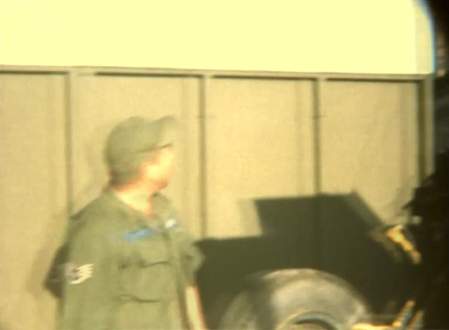
DFP32301 · CC BY-SA 4.0 · source
This frame: close view of an airman in olive uniform (skin tones). Stills from the Phu Cat Air Base Super 8 reel: landscape with mountain, base overview, jet on runway, valley landscape, helicopter with soldiers and a close airman portrait. Moderately aged/transfer-limited: soft, warm-yellow cast and clipped highlights in some shots; blues and greens survive. Extracted with ffmpeg from the Commons original (1280x720 VP8) and cropped to the 978x720 picture area. Extracted with ffmpeg from the source video at 00:05:45. Source video: "Super8 Footage of Phu Cat Air Base, Vietnam, 66-67 (Amateur Film).webm" (1280x720, 381.7 s).
Jürgen Ternus · CC BY 3.0 · source
This frame: New Orleans street with people (skin and clothing). Stills from a 1977 Super 8 travel film (New Orleans street with people, cathedral and flowers, red blossoms, Taos pueblo with a person, canyon landscape). Bright, saturated colour with a cyan lean in skies; low-resolution SD transfer (496x360 after cropping). Film stock and camera not stated; Kodachrome 40 was the common US Super 8 stock in 1977 but this is not confirmed (some shots look like Ektachrome). Use as a secondary Super 8 colour reference. Extracted with ffmpeg from the source video at 00:02:20. Source video: "Reisevideo USA (1977) - im Original auf Super-8.webm" (640x360, 1506.2 s).
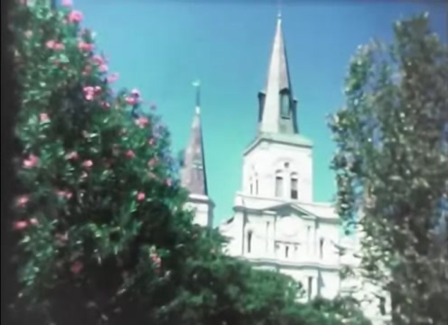
Jürgen Ternus · CC BY 3.0 · source
This frame: cathedral spires with flowering shrubs and blue sky. Stills from a 1977 Super 8 travel film (New Orleans street with people, cathedral and flowers, red blossoms, Taos pueblo with a person, canyon landscape). Bright, saturated colour with a cyan lean in skies; low-resolution SD transfer (496x360 after cropping). Film stock and camera not stated; Kodachrome 40 was the common US Super 8 stock in 1977 but this is not confirmed (some shots look like Ektachrome). Use as a secondary Super 8 colour reference. Extracted with ffmpeg from the source video at 00:05:40. Source video: "Reisevideo USA (1977) - im Original auf Super-8.webm" (640x360, 1506.2 s).
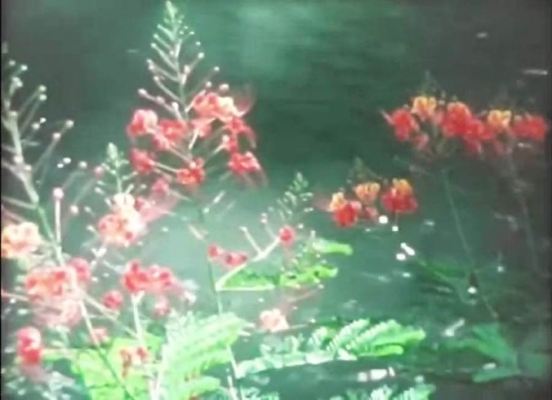
Jürgen Ternus · CC BY 3.0 · source
This frame: red blossoms against green foliage. Stills from a 1977 Super 8 travel film (New Orleans street with people, cathedral and flowers, red blossoms, Taos pueblo with a person, canyon landscape). Bright, saturated colour with a cyan lean in skies; low-resolution SD transfer (496x360 after cropping). Film stock and camera not stated; Kodachrome 40 was the common US Super 8 stock in 1977 but this is not confirmed (some shots look like Ektachrome). Use as a secondary Super 8 colour reference. Extracted with ffmpeg from the source video at 00:11:30. Source video: "Reisevideo USA (1977) - im Original auf Super-8.webm" (640x360, 1506.2 s).
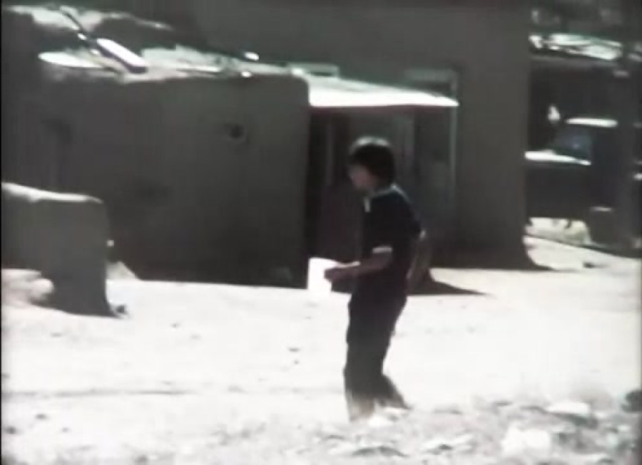
Jürgen Ternus · CC BY 3.0 · source
This frame: adobe pueblo with a person in bright sun. Stills from a 1977 Super 8 travel film (New Orleans street with people, cathedral and flowers, red blossoms, Taos pueblo with a person, canyon landscape). Bright, saturated colour with a cyan lean in skies; low-resolution SD transfer (496x360 after cropping). Film stock and camera not stated; Kodachrome 40 was the common US Super 8 stock in 1977 but this is not confirmed (some shots look like Ektachrome). Use as a secondary Super 8 colour reference. Extracted with ffmpeg from the source video at 00:14:00. Source video: "Reisevideo USA (1977) - im Original auf Super-8.webm" (640x360, 1506.2 s).
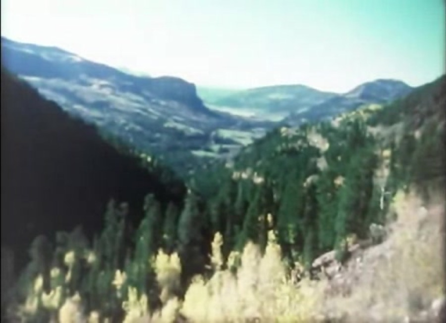
Jürgen Ternus · CC BY 3.0 · source
This frame: canyon landscape with distant mesas. Stills from a 1977 Super 8 travel film (New Orleans street with people, cathedral and flowers, red blossoms, Taos pueblo with a person, canyon landscape). Bright, saturated colour with a cyan lean in skies; low-resolution SD transfer (496x360 after cropping). Film stock and camera not stated; Kodachrome 40 was the common US Super 8 stock in 1977 but this is not confirmed (some shots look like Ektachrome). Use as a secondary Super 8 colour reference. Extracted with ffmpeg from the source video at 00:16:30. Source video: "Reisevideo USA (1977) - im Original auf Super-8.webm" (640x360, 1506.2 s).
Values in the app
From FilmLook.swift: the one place each Camera's and Film Stock's look is set. Spatial values are fractions of the picture's long edge.
/// 1960s Super 8 Home Movie. Format Reference: the Kodak Instamatic M4 with Kodachrome II at 18 frames per second,
/// projected. By the captain's choice on its review board on 2026-10-10 ("muted with a glow"), its color is not
/// PRD 2.1 section 6.2's "strong, rich color" (ADR 0016): lower contrast, slightly desaturated color, darker
/// shadows, lowered whites, teal in the shadows and warmth in the highlights, a soft picture, and a warm
/// reddish-orange glow around bright highlights. Its fine grain, unsteady frame, brightness flicker, and dust and
/// hair in the gate are as the PRD sets them; scratches and other wear are not added.
static let super8 = Treatment(
emulsion: .color(ColorEmulsion(
warmth: 0.05, saturation: 0.9,
tone: ToneCurve(contrast: 1.0, midtones: 1.08, white: 0.93),
shadows: RGB(-0.006, 0.01, 0.012), highlights: RGB(0.014, 0.006, -0.012),
grain: Grain(amplitude: 3.5, size: 0.0012, chroma: 0.25)
)),
halation: Halation(threshold: 0.75, radius: 0.01, strength: 0.3, color: RGB(1, 0.35, 0.1)),
lens: Lens(softness: 0.0016, edgeSoftness: 0.0015, edgeDarkening: 0.45),
gate: Gate(jitter: 0.0035, weave: 0.002, weavePeriod: 1.7, flicker: 0.06, dust: 0.6, hair: 0.5)
)